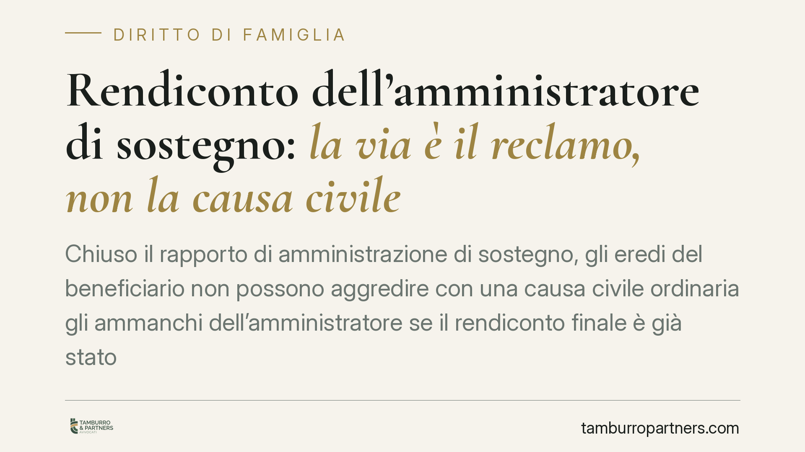

Rendiconto dell'amministratore di sostegno: la via è il reclamo, non la causa civile
Chiuso il rapporto di amministrazione di sostegno, gli eredi del beneficiario non possono aggredire con una causa civile ordinaria gli ammanchi dell'amministratore se il rendiconto finale è già stato approvato dal giudice tutelare. La strada corretta è l'impugnazione del decreto. Una prassi che impone attenzione ai termini, pena la decadenza dalla tutela.

Il nodo: rendiconto dell'amministratore di sostegno e strumenti di contestazione
L'amministratore di sostegno (ADS) gestisce il patrimonio del beneficiario e, al termine dell'incarico, presenta un rendiconto finale: il documento che dà conto delle entrate, delle uscite e della consistenza patrimoniale residua. Quel rendiconto viene esaminato e approvato dal giudice tutelare (GT) con un decreto.
Il problema sorge quando, dopo la morte del beneficiario, gli eredi sospettano ammanchi o irregolarità nella gestione. Qual è lo strumento per far valere le proprie ragioni: una causa civile ordinaria davanti al tribunale, oppure l'impugnazione del provvedimento del GT? La risposta non è neutra, perché determina quale giudice è competente e, soprattutto, entro quali termini si può agire.
Nota redazionale. Il presente contributo commenta un orientamento emerso in sede di merito (Tribunale di Rovigo, Sez. I) di cui non risultano al momento reperibili gli estremi completi di pubblicazione (numero e data della pronuncia). Lo trattiamo pertanto come indicazione di prassi e spunto sistematico, non come precedente consolidato.
Inquadramento normativo
La disciplina dell'ADS rinvia, per quanto compatibile, alle norme su tutela e curatela: l'art. 411 c.c. estende all'amministrazione di sostegno diverse disposizioni dettate per il tutore, tra cui quelle sul rendiconto. Il riferimento di fondo è l'art. 380 c.c., che impone al tutore di rendere conto della propria gestione, e l'art. 386 c.c. sull'approvazione del conto finale.
Sul piano processuale, l'art. 45 disp. att. c.c. affida al giudice tutelare il controllo sulla gestione e sull'approvazione dei rendiconti. I decreti del GT non sono atti definitivi insindacabili: contro di essi è previsto il reclamo in camera di consiglio ex art. 739 c.p.c., da proporre, secondo la regola generale, entro dieci giorni dalla comunicazione del decreto (o dalla notificazione, se effettuata).
Va tenuto distinto il reclamo collegiale ex art. 720-bis c.p.c., previsto espressamente per i provvedimenti in materia di interdizione e inabilitazione. La sua applicabilità ai provvedimenti in tema di amministrazione di sostegno è questione dibattuta in giurisprudenza e non può darsi per pacifica: per i decreti di natura gestoria del GT, lo strumento di riferimento resta il reclamo ex art. 739 c.p.c.
Un chiarimento utile riguarda l'art. 50-bis c.p.c.: esso disciplina i casi di composizione collegiale del tribunale, non è un mezzo di gravame. Invocarlo come "via d'impugnazione" è un errore di impostazione.
Implicazioni pratiche per gli eredi
Il punto centrale è questo: una volta che il GT ha approvato il rendiconto finale con decreto, gli eredi del beneficiario non possono aggirare quel provvedimento promuovendo una causa civile ordinaria per far accertare gli ammanchi. La causa ordinaria, in quel contesto, è inammissibile. Lo strumento è l'impugnazione del decreto del GT nei termini e nelle forme sopra indicate.
La conseguenza è severa: chi lascia decorrere i termini di reclamo rischia di vedere consolidato il rendiconto e di restare privo di rimedio efficace. Il tema dei termini, dunque, non è un dettaglio procedurale: è il cuore della tutela.
Attenzione anche a un rischio ulteriore. La costruzione di una difesa su precedenti giurisprudenziali inesistenti o male riportati espone alla responsabilità aggravata ex art. 96, terzo comma, c.p.c.: il giudice può condannare la parte al pagamento di una somma anche in assenza di prova del danno. Citare sentenze "di comodo" non verificate è una scelta che si ritorce contro chi la compie.
Cosa fare in concreto
- Verificate subito la data del decreto di approvazione del rendiconto e la data della sua comunicazione: da lì decorrono i dieci giorni per il reclamo ex art. 739 c.p.c.
- Non impostate una causa civile ordinaria come primo strumento contro gli ammanchi: se il rendiconto è stato approvato, rischiate una pronuncia di inammissibilità.
- Esaminate il rendiconto nel dettaglio con un consulente contabile, individuando voci opache, movimenti non giustificati e scostamenti rispetto alla consistenza patrimoniale iniziale.
- Citate solo precedenti verificati, con estremi completi e controllabili: evitate riferimenti giurisprudenziali non riscontrati, per non incorrere nell'art. 96 c.p.c.
- Rivolgetevi tempestivamente a un legale: la scansione dei termini sul rendiconto dell'amministratore di sostegno è stretta e l'errore di strumento è difficilmente recuperabile.
Consigliamo, in presenza di sospetti sulla gestione, di muoversi prima della chiusura formale del procedimento: intervenire nella fase di esame del rendiconto è più efficace che tentare di rimettere in discussione un decreto ormai definitivo.
Contributo informativo a cura di Tamburro & Partners Avvocati - Avv. Giuseppe Tamburro. Non costituisce parere legale.
Ogni famiglia ha il suo equilibrio.
Separazione, divorzio, affidamento, assegno: se vuoi un confronto riservato su una specifica situazione, scrivi allo studio. Ti rispondiamo entro un giorno lavorativo.